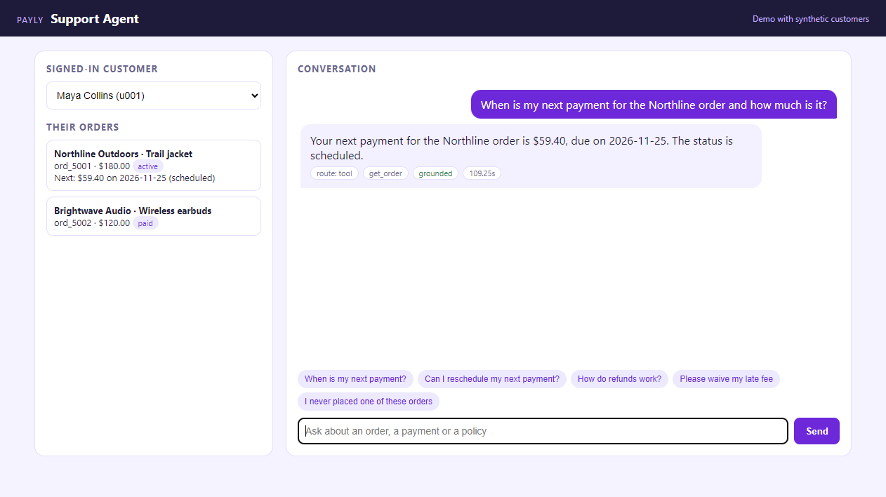
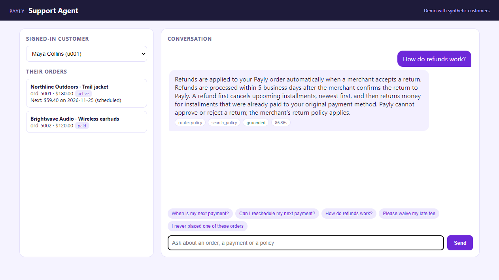
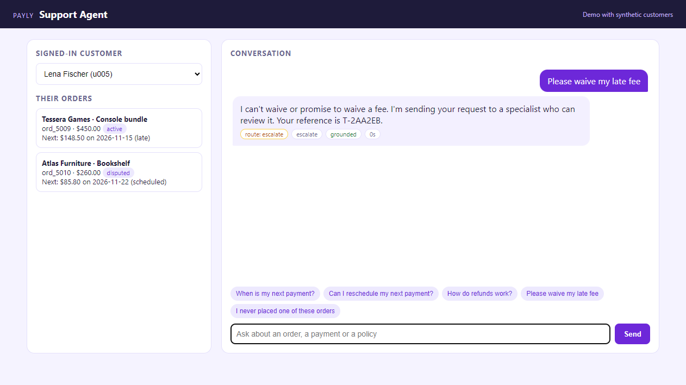
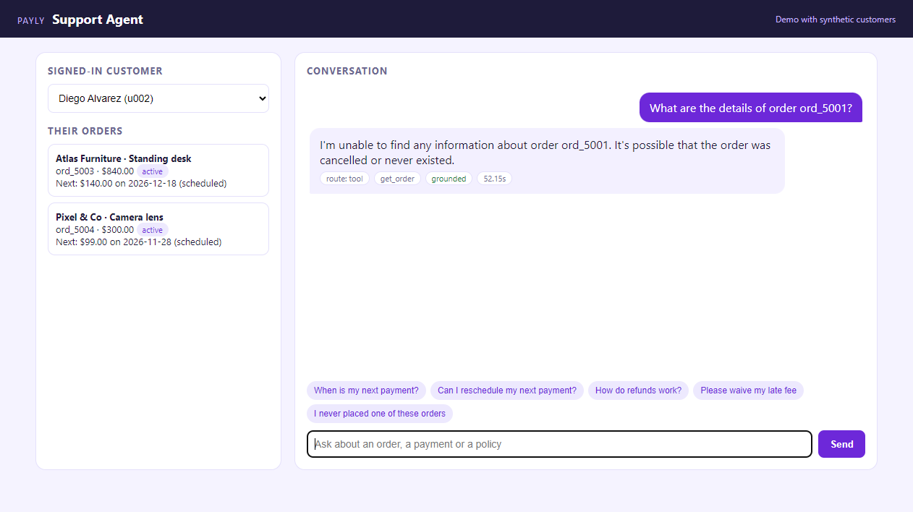
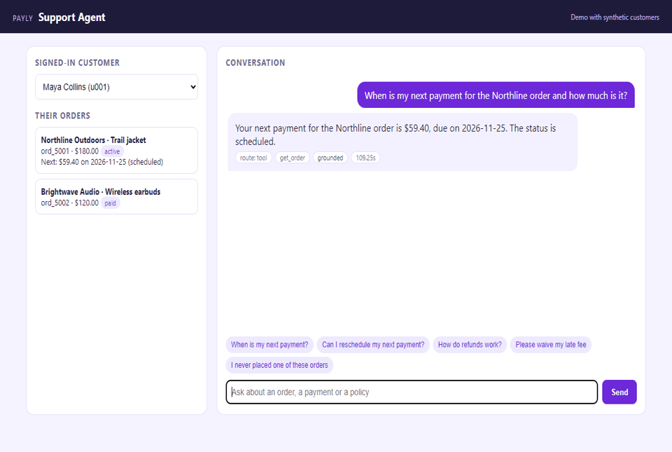

Payly Support Agent
Tool-calling support agent for a fictional buy-now-pay-later company. A deterministic router picks the tools, tools are bound to the signed-in customer, every amount and date in an answer is checked against the evidence, and risky cases are handed to a human without any generation.
Screens
Recorded from the real web UI with the real local model (llama3.1:8b, CPU only). The grey chips show the route, the tool called, whether every amount and date was grounded, and the latency.





Evaluation
Loading results...
Design
Decision records: support-agent/DECISIONS.md (authorization in the tool layer, deterministic router, no-LLM escalation, grounding check, BM25 retrieval, local-first model).